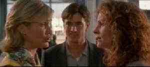

|
My Best Friend's WeddinMg/B,A |
|
Columbia-Tristar/1997/105 minutes//ANA 2.35, PS 1.33 |
When a food critic is invited to a former beau's wedding, she becomes convinced that she's made a mistake in not marrying him herself. She sets off on a course to intercept the wedding nuptials. This romantic triangle often plays with a sour tone, but the Julia Roberts charm succeeds in keeping her character from sinking too low. Dermot Mulroney is the object of her desire and Cameron Diaz has to protect her turf against the Roberts onslaught. Rupert Everett playing Roberts' gay friend is quite wonderful, almost stealing the movie for himself. Everything sorts itself out in various Chicago locales under the guidance of Aussie director P.J.. Hogan, whose first film, Muriel's Wedding, was a very successful off-beat comedy.
 |
|
Biting triangle. ãColumbia Tristar |
Another stunning transfer from Columbia, the mad-cap action is given a high key palette. The anamorphic images is razor sharp with almost no evidence of typical NTSC artifacts. Surround sound is splendidly resolved with music and dialogue in perfect balance.

The Movie Poster Archive include extensive poster images from the films of stars like Susan Hayward, Kirk Douglas, Katharine Hepburn and many more. Our featured star is Spencer Tracy.

Need a daily fix of movie quotes. Reel Quotes Newsletter has the answer. Click on the Reel Quotes symbol for more.

Check out these selections from our DVD Review Archive. New releases are constantly in our face, but catalog gems should not be forgotten.